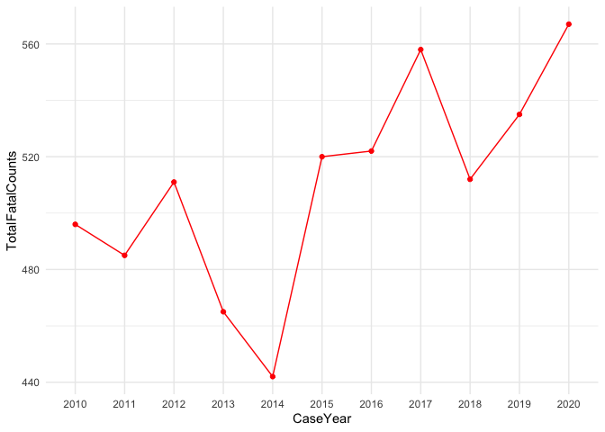

The goal of the crashapi R package is to provide functions for downloading data from the National Highway Traffic Safety Administration (NHTSA) Fatality Analysis Reporting System (FARS) API.
What is FARS? NHTSA explains: “The Fatality Analysis Reporting System (FARS) contains data on all vehicle crashes in the United States that occur on a public roadway and involve a fatality.”
Supported APIs for this package include:
- Get Crash List Information
- Get Crash Details
- Get Crashes By Location
- Get Crashes By Vehicle
- Get Summary Counts
- Get Variables and Get Variable Attributes
- Get FARS Data By Year
Most of these APIs support XML, JSV, CSV, and JSON output formats. This package only uses JSON with the exception of get_fars_year (which supports downloading CSV files).
Currently unsupported APIs include:
- Get Crashes By Occupant
For reference, this package also includes a list of terms and NHTSA technical definitions in fars_terms.
The FARS API currently only provides access to data from 2010 to 2019. The get_fars_zip function can be used to access FARS data files from 1975 to 2019 that that are available for download on through the NHTSA File Downloads site as zipped CSV or SAS files (not available through the NHTSA FARS API). This site also provides extensive technical documentation on coding and use of the FARS data files.
Earlier data along with data from the the General Estimates System (GES) / Crash Report Sampling System (CRSS) is also available through the Fatality and Injury Reporting System Tool (FIRST).
The NHTSA website also provides additional information on the release data and version status for the FARS data files:
| Data Year | File Version | Release Date |
|---|---|---|
| 2010 | Final | December 11, 2012 |
| 2011 | Final | November 13, 2013 |
| 2012 | Final | December 12, 2013 |
| 2013 | Final | December 14, 2014 |
| 2014 | Final | December 18, 2015 |
| 2015 | Final | December 16, 2016 |
| 2016 | Final | December 14, 2017 |
| 2017 | Final | December 18, 2018 |
| 2018 | Final | June 24, 2021 |
| 2019 | Annual | June 24, 2021 |
Installation
You can install the development version of crashapi using the remotes package:
remotes::install_github("elipousson/crashapi")Examples
# Get fatal crashes in NY from 2019 with 5 to 10 vehicles
get_fars(
year = 2019,
state = "NY",
vehicles = c(5, 10)
)
#> Setting `api` to 'state list' based on the `get_fars()` parameters.
#> CountyName CrashDate Fatals Peds Persons St_Case State
#> 1 BRONX (5) /Date(1549865820000-0500)/ 2 1 7 360042 36
#> 2 ERIE (29) /Date(1551915000000-0500)/ 1 0 4 360159 36
#> 3 ORANGE (71) /Date(1558274040000-0400)/ 1 0 1 360277 36
#> 4 QUEENS (81) /Date(1561656240000-0400)/ 1 0 6 360319 36
#> 5 BRONX (5) /Date(1561866000000-0400)/ 1 0 11 360339 36
#> 6 KINGS (47) /Date(1564564080000-0400)/ 1 0 5 360440 36
#> 7 SUFFOLK (103) /Date(1563792360000-0400)/ 1 0 2 360551 36
#> StateName TotalVehicles
#> 1 New York 5
#> 2 New York 5
#> 3 New York 6
#> 4 New York 5
#> 5 New York 5
#> 6 New York 5
#> 7 New York 6
# Get fatal crashes for Baltimore County, MD from 2017 to 2018
get_fars(
year = c(2017, 2018),
state = "MD",
county = "Baltimore County"
) |>
# Show 10 fatal crashes at random
dplyr::slice_sample(n = 10)
#> CITY CITYNAME COUNTY COUNTYNAME CaseYear FATALS LATITUDE
#> 1 0 NOT APPLICABLE 5 BALTIMORE (5) 2017 1 39.32450278
#> 2 0 NOT APPLICABLE 5 BALTIMORE (5) 2017 1 39.39030556
#> 3 0 NOT APPLICABLE 5 BALTIMORE (5) 2018 1 39.59704722
#> 4 0 NOT APPLICABLE 5 BALTIMORE (5) 2018 1 39.48262500
#> 5 0 NOT APPLICABLE 5 BALTIMORE (5) 2017 1 39.32001944
#> 6 0 NOT APPLICABLE 5 BALTIMORE (5) 2018 1 39.34260278
#> 7 0 NOT APPLICABLE 5 BALTIMORE (5) 2018 1 39.53943333
#> 8 0 NOT APPLICABLE 5 BALTIMORE (5) 2018 1 39.39003889
#> 9 0 NOT APPLICABLE 5 BALTIMORE (5) 2018 2 39.41428611
#> 10 0 NOT APPLICABLE 5 BALTIMORE (5) 2018 1 39.35688056
#> LONGITUD STATE STATENAME ST_CASE TOTALVEHICLES TWAY_ID TWAY_ID2
#> 1 -76.447477780 24 Maryland 240397 2 SR-150 CR-4750
#> 2 -76.543530560 24 Maryland 240267 1 CR-3382
#> 3 -76.664830560 24 Maryland 240222 1 I-83
#> 4 -76.644455560 24 Maryland 240255 1 SR-45
#> 5 -76.454766670 24 Maryland 240435 1 SR-150 CR-4728
#> 6 -76.479944440 24 Maryland 240320 2 SR-7
#> 7 -76.837750000 24 Maryland 240395 1 SR-30
#> 8 -76.721291670 24 Maryland 240045 1 I-695
#> 9 -76.591208330 24 Maryland 240263 1 I-695
#> 10 -76.450102780 24 Maryland 240304 2 US-40
#> VE_FORMS
#> 1 2
#> 2 1
#> 3 1
#> 4 1
#> 5 1
#> 6 1
#> 7 1
#> 8 1
#> 9 1
#> 10 2
# Get crashes for Baltimore County, MD from 2014
crashes <-
get_fars(
year = 2014,
state = "MD",
county = "Baltimore County",
geometry = TRUE
)
# Map crashes
ggplot() +
geom_sf(
data = tigris::county_subdivisions(state = "MD", county = "Baltimore County"),
fill = NA, color = "black"
) +
geom_sf(
data = crashes,
aes(color = TOTALVEHICLES)
) +
theme_void()
#> | | | 0% | | | 1% | |= | 1% | |= | 2% | |=== | 4% | |=== | 5% | |==== | 5% | |==== | 6% | |===== | 7% | |===== | 8% | |====== | 8% | |====== | 9% | |======= | 9% | |======= | 10% | |======= | 11% | |======== | 11% | |======== | 12% | |========= | 12% | |========= | 13% | |========== | 14% | |========== | 15% | |=========== | 15% | |=========== | 16% | |============= | 19% | |============== | 19% | |============== | 20% | |================ | 23% | |================= | 24% | |================= | 25% | |================== | 25% | |================== | 26% | |=================== | 27% | |=================== | 28% | |==================== | 28% | |==================== | 29% | |===================== | 29% | |===================== | 30% | |====================== | 31% | |====================== | 32% | |======================= | 33% | |======================== | 34% | |========================= | 36% | |========================== | 37% | |============================= | 41% | |============================== | 42% | |================================ | 45% | |================================ | 46% | |================================= | 47% | |================================== | 48% | |================================== | 49% | |====================================== | 54% | |=========================================== | 62% | |============================================== | 66% | |================================================== | 71% | |==================================================== | 74% | |======================================================== | 80% | |========================================================= | 81% | |========================================================= | 82% | |========================================================== | 82% | |========================================================== | 83% | |========================================================== | 84% | |=========================================================== | 84% | |=========================================================== | 85% | |============================================================ | 85% | |============================================================ | 86% | |============================================================= | 86% | |============================================================= | 87% | |============================================================== | 88% | |============================================================== | 89% | |================================================================= | 92% | |==================================================================== | 97% | |======================================================================| 100%
# Get summary crash count and fatal crash count data for Maryland from 2010 to 2019
md_summary <-
get_fars(
year = c(2010, 2019),
state = "MD",
api = "summary count"
)
ggplot(md_summary, aes(x = CaseYear, y = TotalFatalCounts)) +
geom_point(color = "red") +
geom_line(color = "red", group = 1) +
theme_minimal()
Related packages and projects
- stats19 “provides functions for downloading and formatting road crash data” from “the UK’s official road traffic casualty database, STATS19.”
- njtr1: “An R interface to New Jersey traffic crash data reported on form NJTR-1.”
- nzcrash: “An R package to distribute New Zealand crash data in a convenient form.”
- GraphHopper Open Traffic Collection: “Collections of URLs pointing to traffic information portals which contain open data or at least data which is free to use.”
- Open Crash Data Index: A Google Sheet listing a range of city, county, regional and state sources for crash data including non-injury crashes as well as the fatal crashes available through the FARS API. Contributions for crash data from other U.S. cities adn states are welcome.